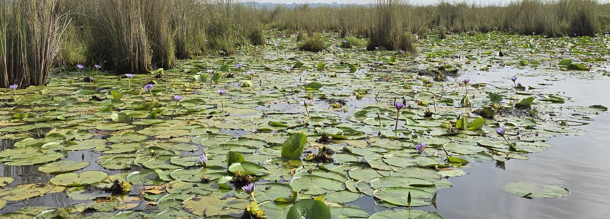

01 · Mountain gorillaBwindi
Into the forest.
Explore mammals↗Gorilla · Bwindi · Rebeccananonof · CC0

Discover its names. Follow its stories.
Life is disappearing.
Extinction is forever.
Look beyond the familiar. Uganda’s national bird lives in open wetlands and the grasslands beside them — and depends on both.
Explore birds↗Uganda’s national symbol · listed as Endangered

Uganda’s living world, arranged by group. Start with whatever you can already name — or with what you have only seen.
Search every record↗Descriptions written for 5 of 1,901 records. Most still lack a habitat note, a local name or a story. This is a beginning, not a conclusion.
Names, stories and knowledge passed on.
Uganda’s biological record is also a human one — held in language, practice and memory. This is where those records meet.
Meet the peoples of Uganda↗


Savannas. Forests. Wetlands. Explore the communities that make a living world.
Explore ecosystems↗Mabamba Bay · Z thomas · CC BY 4.0
Discovery, survival, extinction — and the possibility of return.
Gorilla · Bwindi · Rebeccananonof · CC0

Southern white rhino · Ziwa · Rod Waddington · CC BY-SA 2.0
Understanding begins with looking closer.
Living Uganda is an independent, growing record of the country’s species, ecosystems and knowledge. It is preliminary by design — built to be corrected, extended and kept.